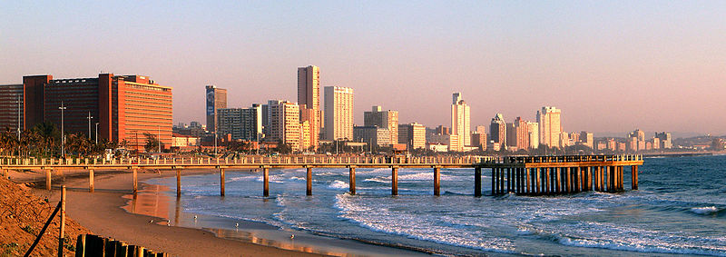

The second most populous city in South Africa. Colloquially named The Mother City, it is the largest city of the Western Cape Province and forms part of the City Of Cape Town metropolitan municipality, the city is known for its harbour,for its natural setting in the Cape Floristic Region and for landmarks such as Table Moutain and Cape Point.
Durban or ethekwini in Zulu which means 'city' is the third most populous city in South Africa after Johannesburg and Cape Town.Situated in the South African Province KwaZulu-Natal and forms part of the eThekwini Metropolitan Municipality which includes neighboring towns and has a population of about 3.44 million. The city is one of the largest cities on the Indian Ocean coast of the African continent.
Paris is the capital and most populous city of France with an estimated population of 2,148,271 residents as of 2020, in an area of more than 105 square kilometers since the 17th century , the city has been one of Europe's major centres of fashion,science and art.The city is a major railway, highway and air-transport hub served by two major airports : Paris-Charles de Gaulle and Paris-Orly.

The largest city in Turkey and the country's economic, cultural and historic centre.The city straddles the Bosporous strait and lies in both Europe ans Asia with a population of over 15 million residents. Istanbul is the most populous city in Europe and the world's fifteenth-largest city.

New York City (NYC), often called simply New York, is the most populous city in the United States. Located at the southern tip of the State of New York, the city is the centre of the New York metropolitan area , the largest metropolitan area in the world by urban mass. With almost 20 million people in its metropolitan statistical area and approximately 23 million in its combined statistical area, it is one of the worlds most populous megacities.